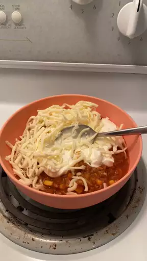

Pumpkin Turkey Chili

Description
A beautiful recipe for some comforting chili! Takes around 30 minutes to make.
Ingredients
- 1 tablespoon vegetable oil
- 1 cup chopped onion
- ½ cup chopped green bell pepper
- ½ cup chopped yellow bell pepper
- 1 clove garlic, minced
- 1 pound ground turkey
- 1 (14.5 ounce) can diced tomatoes
- 2 cups pumpkin puree
- 1 ½ tablespoons chili powder or more to taste
- ½ teaspoon ground black pepper
- 1 dash salt
- ½ cup shredded Cheddar cheese
- ½ cup sour cream
Directions
- Heat oil in a large skillet over medium heat. Add onion, green bell pepper, yellow bell pepper, and garlic; cook and stir until tender.
- Stir in turkey and cook until evenly brown; drain.
- Mix in tomatoes and pumpkin. Season with chili powder, pepper, and salt. Reduce heat to low, cover, and simmer 15 to 20 minutes. Serve topped with Cheddar cheese and sour cream.
Back